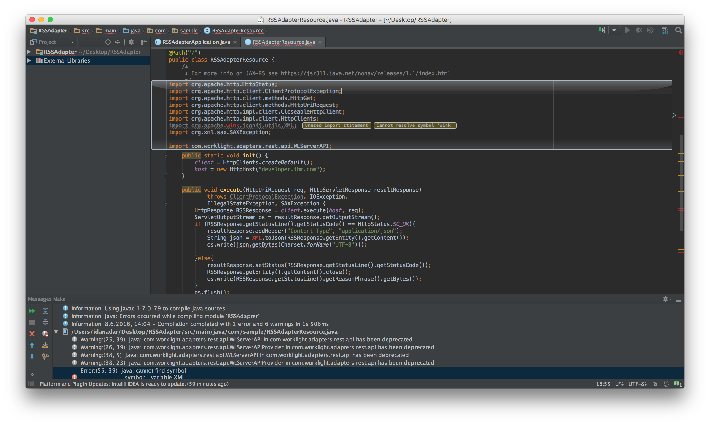

Setup
A couple of things are needed before the migration can begin: a running MobileFirst Server and the Migration Assitance tool.
MobileFirst Server
You can setup a MobileFirst Server on IBM Bluemix using the Mobile Foundation Bluemix service in a few simple steps. Alternatively, you can use the MobileFirst Developer Kit to setup a locally running server.
Migration Assitance tool
With the MobileFirst Server up & running, and since we’ll be using the Migration Assistance tool down the road, lets have the tool installed.
- Install NodeJS as it is a prerequisite for the tool to work.
- From the MobileFirst Operations Console, click on the Download Center link at the bottom of the sidebar navigation and download & install the Migration Assistance tool.

Migrating Applications
In this section you'll be guided through the steps to migrate your Classic Hybrid/MFPF Cordova, Native and web applications. This section includes: assessing the changes in the API by running the Migration Assistance tool, setting up the project structure, managing the application source, using package managers and handling API changes.
Moving from Classic Hybrid/MFPF Cordova apps to standard Cordova apps
This aspect of the migration process applies to Worklight Foundation 6.2 - MobileFirst Platform Foundation 6.3-7.1
In past releases of IBM Worklight Foundation and IBM MobileFirst Platform Foundation, Classic Hybrid applications were created, developed, built and managed using the Eclipse Studio plug-in or MobileFirst CLI. Starting MobileFirst Foundation 8.0, support is introduced for standard Cordova applications, replacing the previous application model.
Cordova applications are created using standard community tools, for example the Cordova CLI (note: You can also setup Eclipse for Cordova application development). The MobileFirst Cordova SDK is added to the mixture using the Cordova CLI as a set of Cordova plug-ins, available from npm.
The move to standard Cordova applications opens the door for developers to use their favorite tools and their own approaches to application development. As a developer you are now super-charged with the power that is the Cordova eco-system.
Learn more about Cordova application development in MobileFirst Foundation 8.0 in the tutorials section.
To benefit from this newly gained power you’ll need to migrate your existing Classic Hybrid app structure to a standard Cordova app structure. So lets do that.
Step 1
Open a command-line window and use the Migration Assistance tool in the following manner.
This could take a while to complete, depending on your Internet connection...
- Replace source_directory with the path to the application folder inside the Studio project, for example: ../Desktop/InvokingAdapterProcedures/apps/InvokingAdapterProcedures
- Replace destination_directory with a path to a folder that will house the converted application and the generated API report
You can read more about what that the Migration Assistance tool does in this user documentation topic.

Once the Migration Assistance tool successfully finishes running, the following has taken place:
- The MigratedProject folder now contains a new Cordova application with the same metadata as your Classic Hybrid app (the application identifier and other settings depending on the setup of the Classic Hybrid app), as well as installed the MobileFirst Cordova SDK and added required platforms.
- An API report, {app-name}-api-report.html, was generated containing potential actions that you will need to follow in order to align the application implementation for use in MobileFirst Foundation 8.0.

Step 2
Before you can act on the generated API report, the application’s source code needs to be copied over from the Classic Hybrid app to the Cordova app.
Classic Hybrid appCopy the contents of the common folder and paste it to the www folder of the Cordova app (replace if prompted).
MFPF 7.1 Cordova appcopy the www folder and replace the existing www folder of the Cordova app.
Note: If you have environment-specific implementation in your Classic Hybrid app you can copy it over using Cordova Merges.
You are not required to use the Cordova application that is created for you by the Migration Assistance tool. Using the Cordova CLI you can create a new Cordova application on your own and add the MobileFirst Cordova SDK, as well as any 3rd party Cordova plug-in you may need. Follow the Cordova tutorials to learn more.
Step 3
With the application’s source code now in the Cordova app, a few code blocks need to be either added or edited.
- Update the www/index.html file.
- Add the following CSS code to the head of your index.html file, before your CSS code that is already there. {% highlight html %} {% endhighlight %} Note: The worklight.css file sets the body attribute to relative. If this affects the style of your app, then declare a different value for the position in your own CSS code. For example: {% highlight css %} body { position: absolute; } {% endhighlight %}
- Add a reference to the Cordova JavaScript file to the head of the file after the CSS definitions. {% highlight html %}{% endhighlight %}
- Remove the following line of code if it is present. {% highlight html %}{% endhighlight %} You can download your own version of JQuery, and load it as shown in the following code line. {% highlight html %}{% endhighlight %} You do not have to move the optional jQuery addition to the lib folder. You can move this addition anywhere you want to, but you must correctly reference it in the index.html file.
- Update the www/js/InitOptions.js file to call WL.Client.init automatically.
- Remove the following code from InitOptions.js.
The function
WL.Client.initis called automatically with the global variablewlInitOptions. {% highlight javascript %} if (window.addEventListener) { window.addEventListener('load', function() { WL.Client.init(wlInitOptions); }, false); } else if (window.attachEvent) { window.attachEvent('onload', function() { WL.Client.init(wlInitOptions); }); } {% endhighlight %}
- Remove the following code from InitOptions.js.
The function
- Optional: Update the www/InitOptions.js file to call
WLClient.initmanually.- Edit the config.xml file and set the
mfp:clientCustomInitelement'senabledattribute to true. - If you are using the MobileFirst hybrid default template, replace this code: {% highlight javascript %} if (window.addEventListener) { window.addEventListener('load', function() { WL.Client.init(wlInitOptions); }, false); } else if (window.attachEvent) { window.attachEvent('onload', function() { WL.Client.init(wlInitOptions); }); } {% endhighlight %} with the following code: {% highlight javascript %} if (document.addEventListener) { document.addEventListener('mfpready', function() { WL.Client.init(wlInitOptions); }, false); } else if (window.attachEvent) { document.attachEvent('mfpready', function() { WL.Client.init(wlInitOptions); }); } {% endhighlight %}
- Edit the config.xml file and set the
Step 4
The Cordova application is almost fully migrated. Now’s the time to handle the generated API report. Open the API report in a browser window and review the presented items. For each item in the report, you will need to either implement it differently or replace it entirely. You can re-run the Migration Assistance tool, this time pointing to the new Cordova application to check again for any APIs that were not dealt with.
Step 5
To test the Cordova application you can either preview only its web resources, run in a simulator/emulator or in a physical device.
Note: Depending on your application flow you may need to continue adjusting your code (see below) before being able to test it.
Previewing web resources:
- From a command-line window, navigate to the applications root folder
- Run the command:
mfpdev app preview
Learn more about previewing an application's web resources
Testing in emulator/simulator or physical device:
- From a command-line window, navigate to the applications root folder
- If you're only testing UI, you can simply build & run the application:
cordova run platform-name - If you're also testing application logic related to MobileFirst, make sure to first register the application
mfpdev app register
Supplemental reading:
- Comparison of Cordova apps developed with V8.0.0 versus V7.1.0 and before
- Features that are discontinued in 8.0.0 and features that are not included in 8.0.0
- Migrating existing hybrid or cross-platform apps to Cordova apps supported by MobileFirst version 8.0
- Migrating encryption for Cordova iOS applications
Next steps
- Review the development topics to continue with the migration.
- Migrate your adapters.
Modifying Mobile Web/Desktop Browser applications
Updating the SDKs in native applications
In past releases of IBM Worklight Foundation and IBM MobileFirst Platform Foundation, the SDKs for native applications required using the Eclipse Studio plug-in or MobileFirst CLI to first create the platform-specific artifacts (WorklightAPI folder, configuration files and so on) followed by a manual copy & paste of said artifacts into the native projects in their respective IDEs followed by further project setup.
Starting MobileFirst Foundation 8.0, support is now introduced for community favored package managers: CocoaPods for iOS, Gradle for Android and NuGet for Windows. With these tools at the developer’s hands, adding the MobileFirst Native SDK is now streamlined for each of the platforms.
Learn more about Native application development in MobileFirst Foundation 8.0 in the tutorials section.
To migrate existing native applications, lets first asses the changes in the API by running the Migration Assistance tool, followed by replacing the existing SDK with the new SDK.
Step 1
Use the Migration Assistance tool to generate an API report.
Note: at this time the Migration Assistance tool supports scanning native applications that are based on MobileFirst Platform Foundation 7.1 only.
Open a command-line window and use the Migration Assistance tool in the following manner:
{% highlight bash %}mfpmigrate scan --in path_to_source_directory --out path_to_destination_directory --type platform{% endhighlight %}- Replace source_directory with the path to the native project, for example: ../Desktop/FormBasedAuthObjCiOS-release71
- Replace destination_directory with the location where you'd like the report to be generated at
- Replace platform with a supported platform:
ios,androidorwindows

Once the Migration Assistance tool successfully finishes running, the following has taken place:
- An API report, {app-name}-api-report.html, was generated containing potential actions that you will need to follow in order to align the application implementation for use in MobileFirst Foundation 8.0.

Step 2
With the API report generated and evaluated, it's time to replace the old Native SDK with the new Native SDK.
iOSPrerequisite: Make sure you have CocoaPods installed on your Mac:
- Open a Command-line window and navigate to the root of the Xcode project.
- Run the command:
sudo gem install cocoapodsfollowed bypod setup. Note: These commands may take several minutes to complete.
If the below doesn't cover your specific case do check the iOS migration user documentation topics.
- Open your project in Xcode.
- Delete the WorklightAPI folder from your Xcode project (move it to trash).
- Modify your existing code in the following ways:
- In the Build Settings tab,
- Remove $(SRCROOT)/WorklightAPI/include from the header search path.
- Remove $(PROJECTDIR)/WorklightAPI/frameworks from the frameworks search path.
- Remove any references to the static librarylibWorklightStaticLibProjectNative.a.
- In the Build Phases tab, remove the links to the following frameworks and libraries (these will be re-added automatically by CocoaPods):
- libWorklightStaticLibProjectNative.a
- SystemConfiguration.framework
- MobileCoreServices.framework
- CoreData.framework
- CoreLocation.framework
- Security.framework
- sqlcipher.framework
- libstdc++.6.dylib
- libz.dylib
- Make sure Xcode is closed.
- Open Terminal and navigate to the root of the Xcode project
- Run the
pod initcommand to create a Podfile file. - The Podfile is created at the root of the Xcode project. Find it and open it in an editor of your choosing.
- Comment out or remove the existing content.
- Add the following lines and save the changes. Remember to update the target value:
{% highlight xml %}use_frameworks!
platform :ios, 8.0
target "replace-with-the-name-of-the-target-in-xcode-project" do
pod 'IBMMobileFirstPlatformFoundation'
end{% endhighlight %}
Additional pods:
IBMMobileFirstPlatformFoundationPush
IBMMobileFirstPlatformFoundationJSONStore
You can further specify additional pods in the file in case your app needs to use the additional functionality. For example, if your app uses OpenSSL, the Podfile might look like this: {% highlight xml %}use_frameworks! platform :ios, 8.0 target "replace-with-the-name-of-the-target-in-xcode-project" do pod 'IBMMobileFirstPlatformFoundation' pod 'IBMMobileFirstPlatformFoundationOpenSSLUtils' end{% endhighlight %} - Run the
pod installcommand. This command installs the MobileFirst Native SDK, IBMMobileFirstPlatformFoundation.framework, and any other frameworks that are specified in the Podfile and their dependencies. It then generates the pods project, and integrates the client project with the MobileFirst SDK. - Open your ProjectName.xcworkspace file in Xcode by typing open ProjectName.xcworkspace from a command line. This file is in the same directory as the ProjectName.xcodeproj file. You can also double-click it from Finder.
- Replace all of the existing MobileFirst imports of headers with a single entry of the following new umbrella header:
Objective C:
#import <IBMMobileFirstPlatformFoundation/IBMMobileFirstPlatformFoundation.h>
Swift:
import IBMMobileFirstPlatformFoundation
- In the Build Settings tab, under Other Linker Flags, add
$(inherited)at the beginning of the -ObjC flag. - If you are using Push Notifications or JSONStore, you need to include an independent import.
Push Notifications
For Objective C:
#import <IBMMobileFirstPlatformFoundationPush/IBMMobileFirstPlatformFoundationPush.h>
For Swift:
import IBMMobileFirstPlatformFoundationPush
JSONStore
For Objective C:
#import <IBMMobileFirstPlatformFoundationJSONStore/IBMMobileFirstPlatformFoundationJSONStore.h>
For Swift:
import IBMMobileFirstPlatformFoundationJSONStore
Android
If the below doesn't cover your specific case do check the Android migration user documentation topics.
- worklight-android.jar
- uicandroid.jar
- bcprov.jar
- android-async-http.jar
- In Android → Gradle Scripts, select the build.gradle (Module: app) file.
- Add the following lines below
apply plugin: 'com.android.application': {% highlight xml %}repositories{ jcenter() }{% endhighlight %} - Add the following inside android: {% highlight xml %}packagingOptions { pickFirst 'META-INF/ASL2.0' pickFirst 'META-INF/LICENSE' pickFirst 'META-INF/NOTICE' }{% endhighlight %}
- Add the following lines inside dependencies: {% highlight xml %}compile group: 'com.ibm.mobile.foundation', name: 'ibmmobilefirstplatformfoundation', version: '8.0.+', ext: 'aar', transitive: true{% endhighlight %} You can further specify additional artfiacts in case your app needs to use the additional functionality. For example, if your app uses Push Notifications, add: {% highlight xml %}compile group: 'com.ibm.mobile.foundation', name: 'ibmmobilefirstplatformfoundationpush', version: '8.0.+', ext: 'aar', transitive: true{% endhighlight %} Or if you intend on using JSONStore: {% highlight xml %}compile group: 'com.ibm.mobile.foundation', name: 'ibmmobilefirstplatformfoundationjsonstore', version: '8.0.+', ext: 'aar', transitive: true{% endhighlight %}
Windows
If the below doesn't cover your specific case do check the Windows migration user documentation topics.
- wlclient.properties
- Newtonsoft.Json
- SharpCompress
- worklight-windows8
- Right-click the project solution and select Manage Nuget packages.
- In the search option, search for "IBM MobileFirst Platform", choose IBM.MobileFirstPlatform.8.0.0.0 and click Install.
- in Package.appxmanifest, add the Internet (client) capability.
Step 3
The Native application is almost fully migrated. Now’s the time to handle the generated API report. Open the API report in a browser and review it. For each item in the report, you will need to either implement it differently or replace it entirely.
Step 4
To test the application, run it in the specific platform's IDE.
Supplemental reading:
Next steps
- Review the development topics to continue with the migration.
- Migrate your adapters.
Migrating Adapters
This aspect of the migration process applies to Worklight Foundation 6.2 - MobileFirst Platform Foundation 6.3-7.1
In past releases of IBM Worklight Foundation and IBM MobileFirst Platform Foundation, Adapters were created, developed and built using the Eclipse Studio plug-in or the MobileFirst CLI. Starting MobileFirst Foundation 8.0, adapters are now considered as standard Apache Maven projects using IBM-provided archetypes for generating the Java and JavaScript adapter types. Using Maven provides to server-side developers a simple and standard way to manage and integrate required dependencies, as well as frees them to use their favorite tools during development time.
Maven projects can be created from a command-line using either Maven commands, or using the MobileFirst CLI that operates Maven commands behind-the-scenes. You can also setup Eclipse or IntelliJ to create and develop adapters in an IDE environment.
Tip: MobileFirst Foundation 8.0 introduces a DevOps-style operation mode, where once an adapter is deployed to the MobileFirst Server you can then configure various properties (for example, a username and password value for a database connection) live via the MobileFirst Operations Console, without needing to re-deploy the adapter.
Learn more about Adapters development in MobileFirst Foundation 8.0 in the tutorials section.
To migrate existing adapters into Maven projects, the process includes creating a matching new Maven project and copying into it the existing adapter's source code (with some modifications). This is then followed by building the Maven project to find any errors.
Prerequisite
Maven adapters require Apache Maven installed on the developer workstation.
- Install Apache Maven.
- Download the Apache Maven .zip.
- Add a
MVN_PATHvariable, pointing to the Maven folder.
Edit your ~/.bash_profile: {% highlight bash %}#### Apache Maven example location export MVN_PATH="/usr/local/bin" {% endhighlight %} Windows:
Follow this guide.
Verify the installation by executing:mvn -v. - The cookbook uses the MobileFirst CLI to call Maven commands in order to create and build the adapters.
- If you haven't already, install NodeJS as it is a prerequisite for the tool to work.
- From a command-line window, run the command:
npm install -g mfpdev-cli(or download & install it from the Download Center in the MobileFirst Operations Console). - Verify the installation by executing:
mfpdev -v.
Create a new adapter template that matches your own adapter type and adapter name and package name.
This will ease the migration as the adpater's metadata will resemble and thus will not require extra editing.
- From a command-line window, run the command:
mfpdev adapter create. - Select the adapter type: an HTTP or SQL JavaScript adapter, or a Java adapter.
- Provide a GroupID.
- If creating a Java adapter make sure to specify the same Package Name that you have previously used (for example, "com.sample")

- Navigate in your filesystem to the JavaScript adapter folder, for example: ../Desktop/JavaScriptAdapters/adapters/RSSReade.
- Open another window and navigate to your new Maven project, for example: ../Desktop/MigratedAdapter and into the src/main/adapter-resources folder.
- Copy & paste into this folder your existing adapter files: filterd.xsl (if used).
- Edit adapter.xml: replace its contents with your existing adapter's XML content (in this example, RSSReader.xml).
- Edit js/{adapter-name}-impl.js: replace its contents with your existing adapter's content (in this example, RSSReader-impl.js).
SQL JavaScript adapters
- Navigate in your filesystem to the JavaScript adapter folder, for example: ../Desktop/JavaScriptAdapters/adapters/SQLAdapter.
- Open another window and navigate to your new Maven project, for example: ../Desktop/MigratedAdapter and into the src/main/adapter-resources folder.
- Edit adapter.xml: replace its contents with your existing adapter's XML content (in this example, SQLAdapter.xml).
- Edit js/{adapter-name}-impl.js: replace its contents with your existing adapter's content (in this example, SQLAdapter-impl.js).
Here's where Maven dependencies come into play. Since we're not using Worklight/MobileFirst Studio where we previously placed the database connector in the server/lib folder, we'll instead replace it with a Maven dependency.
- Go back to the newly created Maven project and open the pom.xml file located at the root of the directory.
- Add a dependency for your database type. You can search for the appropriate depdendency to use in the Maven Central website.
- In this example we'll use MySQL database. Add the following code block in the dependencies section:
{% highlight xml %}
mysql mysql-connector-java 5.1.6
If you have additional dependencies, the pom.xml file is where you point to them - either to a local file or to a remote dependency.
Learn more about Maven dependencies:
Lets reflect for a moment on what was done above using "diagrams":
Old structure of a JavaScript adapter {% highlight xml %}MyProject ├── adapters │ ├── RSSAdapter │ │ ├── RSSAdapter-impl.js │ │ ├── RSSAdapter.xml │ │ └── filtered.xsl{% endhighlight %} New structure of a JavaScript adapter {% highlight xml %}RSSAdapter ├── pom.xml ├── src │ └── main │ ├── adapter-resources │ │ ├── adapter.xml │ │ └── js │ │ ├── RSSAdapter-impl.js │ │ └── filtered.xml{% endhighlight %}- Navigate in your filesystem to the Java adapter folder, for example: ../Desktop/JavaAdapters/RSSAdapter.
- Open another window and navigate to your new Maven project, for example: ../Desktop/MigratedAdapter and into the src/main/adapter-resources folder.
- Edit {adapter-name}.xml: replace its contents with your existing adapter's XML content (in this example, RSSAdapter.xml).
- In the new adapter, navigate to (in this example) src/main/java/com/sample/.
- Replace the existing .java file with your existing adapter's .java files
If you're using any additional libraries in the existing adapter, then here's where Maven dependencies come into play. Since we're not using Worklight/MobileFirst Studio where we previously placed libraries either in server/lib or the Java adapter's lib folder, we'll instead replace them with Maven dependencies.
Learn more about Maven dependencies:
Lets reflect for a moment on what was done above using "diagrams":
Old structure of a Java adapter {% highlight xml %} ├── adapters │ └── RSSAdapter │ ├── RSSAdapter.xml │ ├── lib │ └── src │ └── com │ └── sample │ ├── RSSAdapterApplication.java │ └── RSSAdapterResource.java{% endhighlight %} New structure of a Java adapter {% highlight xml %} ├── pom.xml ├── src │ └── main │ ├── adapter-resources │ │ └── adapter.xml │ └── java │ └── com │ └── sample │ ├── RSSAdapterApplication.java │ └── RSSAdapterResource.java └{% endhighlight %}Building the migrated adapter
From a command-line window, navigate into the adapter's folder and run the command: mfpdev adapter build.

To resolve such errors it is recommended that you will import the Maven project into an IDE such as IntelliJ, and build the project there. With an IDE at your disposal it will be easier to iterate through the build errors and resolve them one-by-one. Learn more about using IntelliJ and MobileFirst adapters.
Testing the built adapter
To test the migrated adapters you can use either the MobileFirst CLI to call your endpoints, or use Swagger.
Learn more about testing adapters in the Testing and debugging adapters tutorial.
Supplemental reading:
Development Topics
With applications and adapters now migrated to their new structure in MobileFirst Foundation 8.0, we do need to talk about some implementation concepts that have changed in the latest release.
Adapters
JavaScript adapters
Global variables and sessionsAvoid using global variables in JavaScript adapters to save data on the session - since there is no "session". This change in behavior first appeared in MobileFirst Platform Foundation 7.1. However, you can use global variables in order to save data for use during a single request. Keep in mind though that this is not a recommended practice anylonger.
connectAs??
Security framework
The security framework in MobileFirst Foundation 8.0 is unlike in previous releases. As such you will need to re-implement some of your application backend & client logic.
It is highly advised that you will take the time to familiarize yourself with the new security framework and its authorization flow, which are now based solely on OAuth, as well new authorization entities such as access tokens, security checks and scopes - which replace previously known entities such as security tests, realms and login modules.
Learn more about the security framework and authorization concepts in the Authentication and security tutorials.
Notifications
In MobileFirst Foundation 8.0 a new Push Service is introduced along side a new experience for setting up, configuring and sending notifications. In addition, the concept of Event Source push notifications has been retired. All is not lost, though! Find detailed scenario-based migration pathes in these user documentation topics:- Migrating to push notifications from event source-based notifications
- Migration scenarios by platform
Learn more about setting up notifications support and sending authenticated and tag-based notifications in the Notifications tutorials.
Direct Update
The steps to deliver updates using the Direct Update feature have changed, and some restrictions are imposed.
- Learn more about how to use Direct Update in the Using Direct Update in Cordova applications tutorial
- Review the Migrating Direct Update user documentation topic
Other
In MobileFirst Foundation 8.0 several other components and features have been removed. For a full list review the Removed Components user documentation topic.
Analytics
??